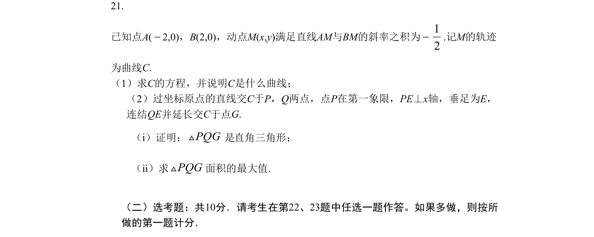
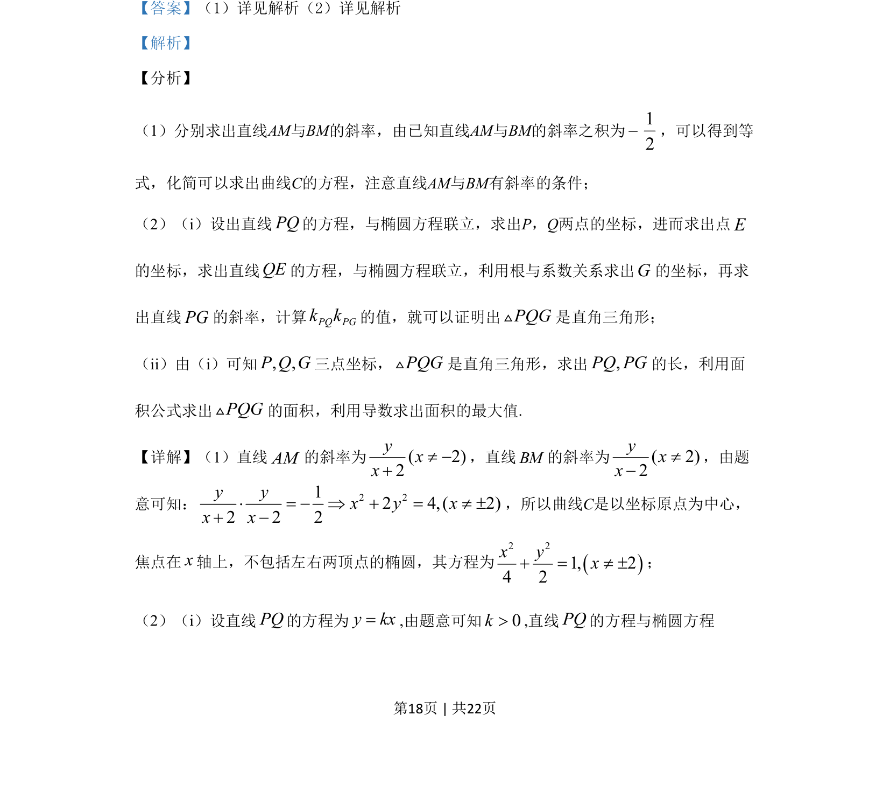

考点：解析几何 椭圆 轨迹方程 三角形面积最值

动点M满足直线AM与BM斜率之积为-1/2，求轨迹C方程（椭圆），并研究过原点直线交C于P、Q两点时△PQG的直角性与面积最大值。

📄 原 PDF 第 18 页：
素材/真题/吉林/2008-2024·（吉林）数学高考真题/2019年高考数学试卷（理）（新课标Ⅱ）（解析卷）.pdf
21. 已知点A(−2,0)，B(2,0)，动点M(x,y)满足直线AM与BM的斜率之积为− 12 .记M的轨迹 为曲线C. （1）求C的方程，并说明C是什么曲线； （2）过坐标原点的直线交C于P，Q两点，点P在第一象限，PE⊥x轴，垂足为E， 连结QE并延长交C于点G. （i）证明：PQGV直角三角形； （ii）求PQGV面积的最大值. （二）选考题：共10分．请考生在第22、23题中任选一题作答。如果多做，则按所 做的第一题计分．
【答案】（1）详见解析（2）详见解析 【解析】 【分析】 （1）分别求出直线AM与BM的斜率，由已知直线AM与BM的斜率之积为− 12 ，可以得到等 式，化简可以求出曲线C的方程，注意直线AM与BM有斜率的条件； （2）（i）设出直线PQ的方程，与椭圆方程联立，求出P，Q两点的坐标，进而求出点E 的坐标，求出直线QE的方程，与椭圆方程联立，利用根与系数关系求出G的坐标，再求 出直线PG的斜率，计算PQ PGk k的值，就可以证明出PQGV是直角三角形； （ii）由（i）可知,,PQG三点坐标，PQGV是直角三角形，求出,PQ PG的长，利用面 积公式求出PQGV的面积，利用导数求出面积的最大值. 【详解】（1）直线AM的斜率为( 2)2yxx¹ −+ ，直线BM的斜率为( 2)2yxx¹− ，由题 意可知： 2 212 4,( 2)2 2 2y yx y xx x× = − Þ + = ¹ ±+ − ，所以曲线C是以坐标原点为中心， 焦点在x轴上，不包括左右两顶点的椭圆，其方程为()2 21, 24 2x yx+ = ¹ ±； （2）（i）设直线PQ的方程为y kx=,由题意可知0k>,直线PQ的方程与椭圆方程 是